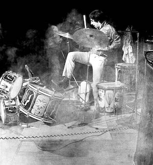

Keith Moon Trivia Quiz
Test your knowledge of the most free-spirited drummer in music history.
- Keith Moon angered animal rights advocates by filling a clear drum with water and goldfish for a televised solo concert. When an audience member asked, "What happens with your goldfish?" Moon answered:
- A. "After my music sets the mood for them, I expect more fish."
- B. "Even the best drummers get hungry."
- C. "Does anyone here want some slightly deaf fish?"
- In the Frank Zappa film 200 Motels, Moon played the role of:
- A. The Hot Nun
- B. Bif Debris - The Vacuum Cleaner
- C. Lonesome Cowboy Burt

- Moon gained a reputation for demolishing his drum kit on stage as shown above and for which of the following:
- A. Altering a marimba to function as a guillotine
- B. Throwing drum sticks at bandmates and flinging cymbals into the audience
- C. Destroying hotel rooms by blowing up toilets and smashing television sets
- Moon's death was due to an overdose of:
- A. alcohol
- B. clomethiazole, a drug used to treat and prevent alcohol withdrawal symptoms
- C. disulfiram, a drug used to treat alcohol abuse by causing hangover effects immediately upon alcohol consumption
Finished!
See answer key.